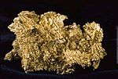
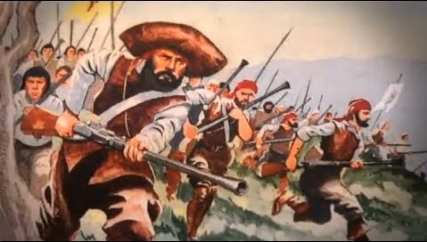

A Guerra dos Emboabas foi um confronto travado de 1707 a 1709 pelo direito de exploração das recém-descobertas jazidas de ouro na Capitania de São Vicente, região do atual estado de Minas Gerais, no Brasil.O conflito contrapôs os desbravadores vicentinos e os forasteiros que vieram depois da descoberta das minas. O primeiro grupo, formado pelos bandeirantes paulistas, havia descoberto a região das minas e, por esta razão, reclamava a exclusividade de explorá-las, e era liderado por Borba Gato.
Logo que a notícia da descoberta do ouro se espalhou, milhares de pessoas se deslocaram para a região, ficando pejorativamente conhecidos como "emboabas".
A corrida pelo ouro atraiu, para a região, cerca de 50 mil pessoas "que fervilhavam à beira dos rios e caminhos, nos sertões distantes e inóspitos". Os bandeirantes se achavam com maiores direitos sobre o ouro das minas, seja por eles terem sido os descobridores do lugar, seja por aquela região fazer parte da capitania de São Vicente, seja pela debilidade recente demonstrada pela coroa portuguesa ao ter de recorrer à ajuda dos bandeirantes paulistas para vencer a Guerra dos Palmares e a Confederação dos Cariris.[4] Prova disso foi petição da Câmara de São Paulo, de 7 de abril de 1700, que requereu que a outorga do território aurífero fosse dada exclusivamente pelas autoridades dessa capitania. Teve papel, no conflito, o protetor de Manuel Nunes Viana, Pascoal da Silva Guimarães.
Para os paulistas, aqueles que não participaram dos esforços na procura de ouro não deveriam ter os mesmos direitos na exploração. A tensão entre os paulistas (também chamados de vicentinos) e os demais exploradores crescia, motivada pelo aumento no fluxo populacional e pela insistência dos paulistas e emboabas de controlarem a região. Apesar de se misturarem pelas regiões povoadas das minas, paulistas e emboabas não se uniam: ao contrário, se juntavam cada grupo com um representante. O ex-bandeirante Manuel de Borba Gato era o líder dos paulistas, enquanto os emboabas eram liderados por Manuel Nunes Viana, português que veio para Bahia jovem, e era conhecido por atos de coragem que o trouxeram para a região onde era proprietário de lucrativas minas.
Outra causa da guerra seria o alto preço dos mantimentos, inclusive pela limitada oferta em ocasião do aumento da demanda.Os comentários de Antonil em 1709 o provam e se tornou clássico o trecho em que relata: "a abundância de mantimentos e de todo o usual que hoje há nas Minas e do pouco caso que se faz dos preços extraordinariamente altos: um alqueire de farinha em São Paulo custava 640 réis, mas em Minas 43 000 réis! E assim por diante, uma libra de açúcar 120 réis em São Paulo e 1 200 nas Minas, uma galinha de 160 para 4 000 réis etc." Eliane Teixeira Lopes cita, em sua obra, um ensaio de Eduardo Frieiro, "Feijão, angu e couve", de 1966, que corrobora os acontecimentos.
Causas que levaram à Guerra dos Emboabas Em primeiro lugar, devemos ressaltar que a descoberta de ouro na região de Minas Gerais no século XVII atraiu dezenas de milhares de pessoas aos centros de mineração. A maioria desses mineradores era da região nordeste, onde a presença portuguesa era maior. Contudo, aquela região era parte da Capitania de São Vicente, dominada pelos bandeirantes paulistas, os quais não desejavam dividir o ouro. O grande número de pessoas levou a uma crise de abastecimento, a qual também foi percebida como uma oportunidade de lucro pelos comerciantes.